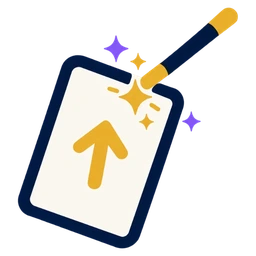
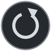

수리수리진타리
진탈이의 돈 버는 마법 카드

연결 준비 중
수리수리 채팅방
누구나 함께 이야기해요 · 매일 자정(한국 시간)에 대화가 초기화돼요
닫기
내 이름
바꾸기
저장
보내기
매수 규칙
백테스트를 통과한 규칙만 매수 의견을 내요
닫기
닫기
닫기
반반도체지수
›
클석진 반반도체 지수
반도체(SOXX) 급락 위험 0~100 · 일봉
닫기
3개월
6개월
1년
3년
전체
손가락으로 좌우로 끌면 이동, 두 손가락으로 벌리면 확대 · 누르면 그날 값